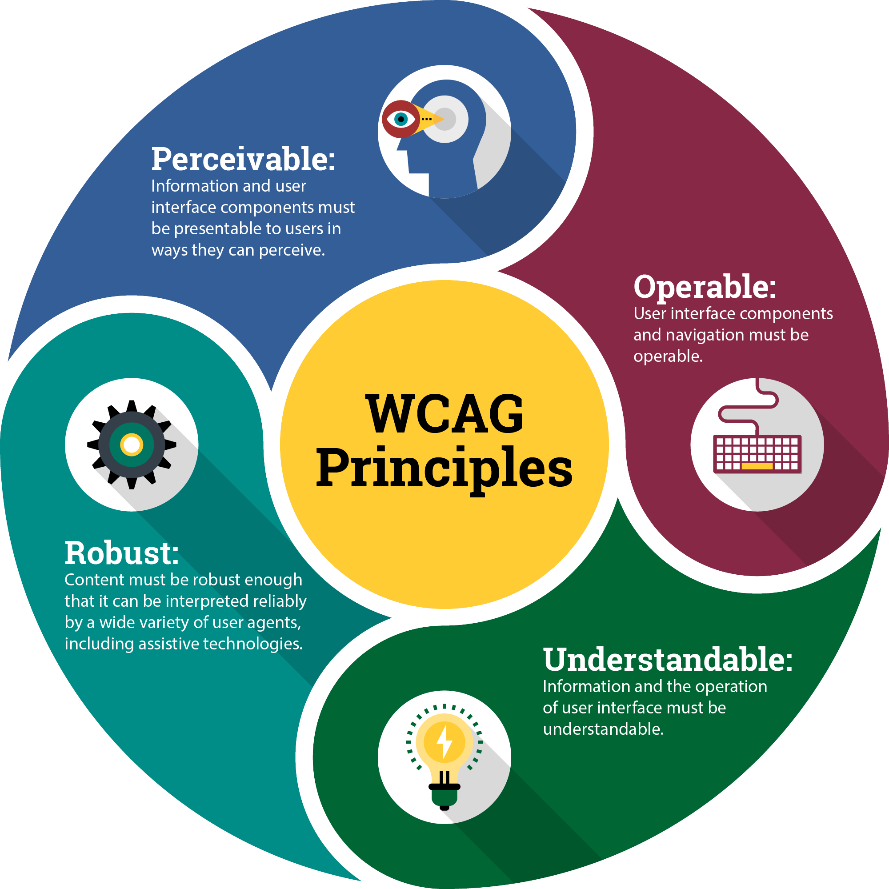
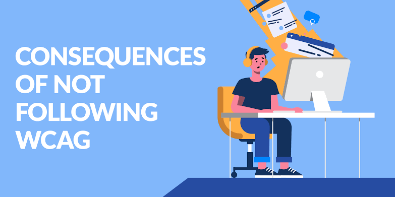
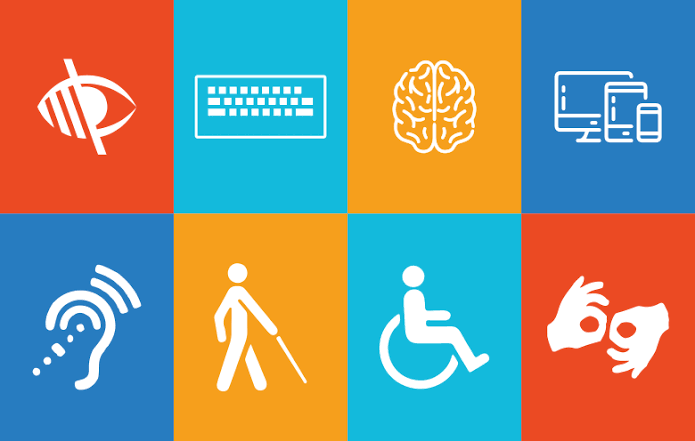

Hva menes med universell utforming, og hva står WCAG for?
Universell utforming betyr at ting skal lages slik at alle kan bruke dem, uansett om de har en funksjonsnedsettelse eller ikke. På nett betyr det at en nettside skal fungere med for eksempel skjermleser, tastatur og forstørret tekst.
WCAG står for Web Content Accessibility Guidelines. Det er retningslinjer for hvordan nettinnhold kan gjøres tilgjengelig, laget av W3C.

Hva kan være en konsekvens dersom vi lar være å forholde oss til universell utforming?
Hvis en nettside eller en bygning ikke er universelt utformet, blir noen stengt ute. En blind person kan for eksempel ikke bruke en nettbank som ikke fungerer med skjermleser, og en rullestolbruker kommer ikke inn i et bygg som bare har trapp.
Virksomheter kan også få pålegg og bøter hvis de ikke følger reglene.

Hvem er Uutilsynet, og hva er deres primæroppgaver?
Uutilsynet er tilsynet for universell utforming av ikt, og er en del av Digitaliseringsdirektoratet. De sjekker at nettsider, apper og selvbetjeningsautomater følger kravene til universell utforming.
Hovedoppgavene er å føre tilsyn, gi pålegg om retting og tvangsmulkt til de som ikke følger reglene, og å veilede virksomheter så de vet hva som kreves.
